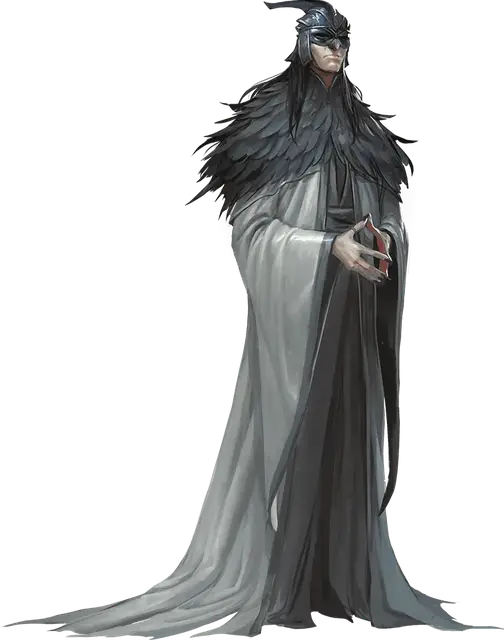

Жрец Воющей Ненависти
Howling Hatred Priest
Средний Гуманоид (Человек), нейтрально-злой

Класс Доспеха 15 (проклёпанный кожаный доспех)
Хиты 45 (10к8)
Скорость 30 футов
| мод | спас | ||
|---|---|---|---|
| СИЛ | 12 | +1 | +1 |
| ЛОВ | 16 | +3 | +3 |
| ТЕЛ | 10 | +0 | +0 |
| мод | спас | ||
|---|---|---|---|
| ИНТ | 14 | +2 | +2 |
| МДР | 10 | +0 | +0 |
| ХАР | 14 | +2 | +2 |
Навыки Акробатика +5, Запугивание +4, Религия +4
Чувства пассивное Восприятие 10
Языки Общий, Ауран
Опасность 2 (450 опыта)
Бонус мастерства +2
Особенности
Задержка дыхания. Жрец может задерживать дыхание до 30 минут
Использование заклинаний. Жрец является заклинателем 5-го уровня. Его базовой характеристикой является Харизма (Сл спасброска от заклинаний 12, +4 к атакам заклинаниями). Он знает следующие заклинания чародея:
• Заговоры (неограниченно):защита от оружия[blade ward], шквал [gust], свет [light], фокусы [prestidigitation], электрошок [shocking grasp]
• 1 уровень (4 ячейки):падение пёрышком [feather fall], щит [shield], ведьмин снаряд [witch bolt]
• 2 уровень (3 ячейки):пылевой вихрь [dust devil], порыв ветра [gust of wind]
• 3 уровень (2 ячейки):газообразная форма[gaseous form]
Действия
Мультиатака. Жрец совершает две рукопашные атаки, либо две дальнобойные атаки.
Скимитар. Рукопашная атака оружием: +5 к попаданию, досягаемость 5 футов, одна цель. Попадание: рубящий урон 6 (1к6 + 3).
Кинжал. Рукопашная или дальнобойная атака оружием: +5 к попаданию, досягаемость 5 футов или дистанция 20/60 футов, одна цель. Попадание: колющий урон 5 (1к4 + 3).
Описание
Жрецы, как самые фанатичные из культистов воздуха, стремятся к физическим крайностям, чтобы уменьшить их плотность и массу, и стать лёгкими, словно листья на ветру. Измождённые и бледные, с вогнутыми животами, выпученными глазами и натянутой кожей, через которую просвечивают кости, эти живые скелеты поддерживают себя только воздухом и безграничной преданностью учениям культа. Сам ветер помогает им двигаться.
Жрецы Воющей Ненависти видят себя живыми продолжениями Ян-Си-Бина и помогают новобранцам сбросить оковы и принять «высшую цель». Как только рекруты готовы, жрецы решают, достойны ли они дальнейшего обучения в качестве послушников, или будут принесены в жертву. Жрецы защищают учение своего пророка — Аериси Калинос — и жестоко пресекают любые попытки своих послушников сбиться с верного пути.
Большинство культистов воздуха ненавидят жрецов, но никто не смеет выступить против них. Те, кто бросают им вызов, часто становятся объектами новых, ещё более страшных обрядов очищения.